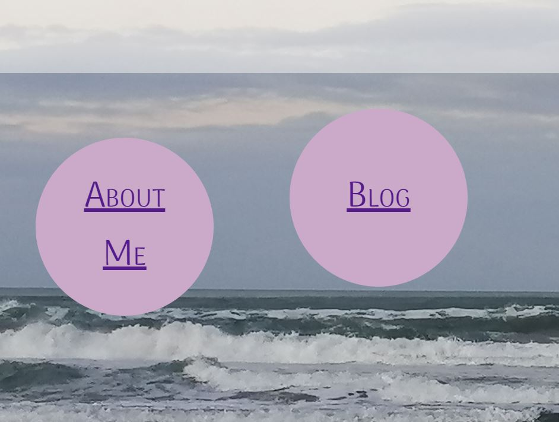

Padding
This creates space around the content.
Border
The border starts at the outer limit of the padding. You can define a borders thickness and its style.
Margin
This is the area outside of the border.

Te Houtaewa was the fastest runner of his day and played many pranks on his peoples enemies. One morning his mother wanted kumara for the hangi (earth oven) and asked Te Houtaewa to go to the gardens at Te Kao, a short distance away. He agreed to fetch the kumara and told his mother to prepare the hangi.
Instead of going to the nearby gardens, Te Houtaewa set off for Ahipara as he wanted to annoy some Te Rarawa people who lived there. Carrying two large baskets for the kumara, he ran like the wind, completing the journey over the hard sands of Te Oneroa a Tohe (Ninety Mile Beach) in the few hours it takes a good hangi to heat up properly. On reaching Ahipara, he went straight to the people's kumara pataka (storehouse for the sweet potatoes) situated at the foot of the hill Whangatauatia.
While Te Houtaewa was filling his baskets with kumara he was spotted stealing the kai (food). He was immediately recognised.
This is a really interesting module. I'm finding that even though there are 10 different ways to make a page look a certain way, there is usually one way that is the most logical.
BUTTONS ARE HARD
Not making them, per se - but formatting them. I've been trying for hours to figure out why my homepage buttons are skewed like this:

I have to walk away and come back to it. I'll get it fixed soon. And I know the solution is going to be a lot simpler than I've made it.
But right now? I'm going to bed!
EDIT: I fixed it!!! Is the syntax the simplest, most logical solution? Probably not. But - it works! And I'll mark that down as a win for now :-)
I find it easiest to think about padding, borders, and margins as radiating out from the CONTENT of an element
Padding
This creates space around the content.
Border
The border starts at the outer limit of the padding. You can define a borders thickness and its style.
Margin
This is the area outside of the border.